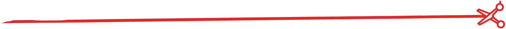
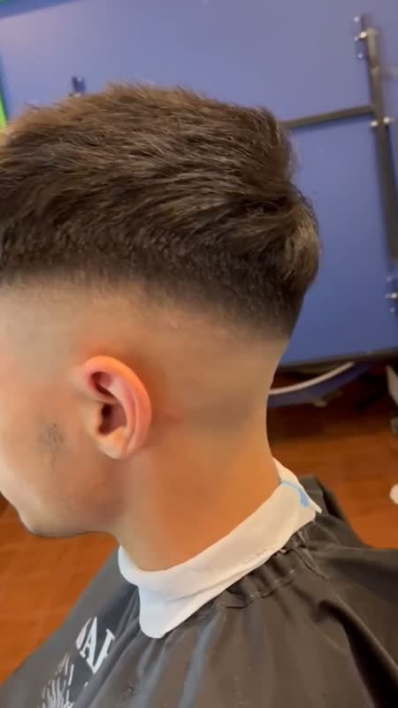
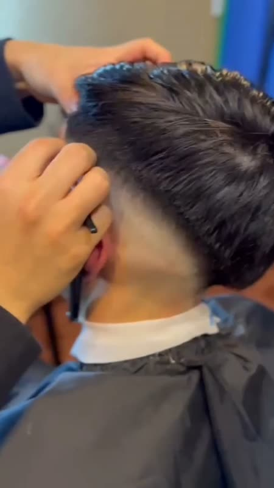
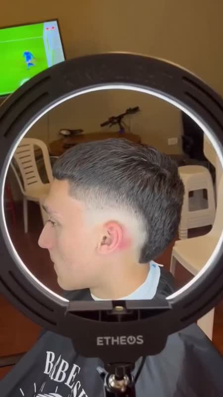

Corte de adultos
Corte de cabello para adultos con Pipa.

Hola, soy Pipa y mi oficio es cuidar tu estilo.
¡Estás en buenas manos!
01 / NUESTROS SERVICIOS
Desde un clásico de siempre hasta un nuevo comienzo. Elegí la experiencia que va con vos.
Corte de cabello para adultos con Pipa.
Corte y arreglo de barba con Pipa.
Lunes a viernes de 10 a 18 · Tarifas a consultar en el local.
03 / PUERTAS ADENTRO
La atmósfera también es parte del ritual.





04 / TU PRÓXIMO TURNO
Elegí tu corte y consultá los horarios disponibles.
Pipa · corte de pelo y barba
Lunes a viernes de 10 a 18, hora de Buenos Aires.
Reservá tu turno y esperá la confirmación vía mail.
ANTES DE VENIR
La agenda muestra los horarios disponibles para corte de pelo y barba con Pipa. Completá tus datos y finalizá la reserva allí. El turno queda registrado cuando recibís la confirmación de la cita. No necesitás crear una cuenta.
El concepto incluye una conversación antes del corte para encontrar una propuesta que acompañe tu pelo, tu rutina y tu estilo.
Atendemos de lunes a viernes de 10 a 18, hora de Buenos Aires. La dirección se incorporará cuando se confirme.